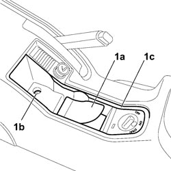
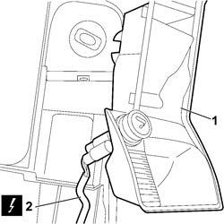

7040L28 TUNNEL SWITCH PANEL - R R
- Path
- Procedures > 70 FITTINGS > 7040 BODY INTERIOR FITTINGS AND TRIM > 7040L CABIN FLOOR COVERING > 7040L28 TUNNEL SWITCH PANEL - R R
- Kind
- repair procedure (removal / refitting; the operation number is the code)
- Applies to
- all engines; all production periods
- Interactive page
- https://sloeber94.github.io/elrnDB-fCrm/en/#/194001076
Applies to: all engines; all production periods
 Removing
Removing
 Refitting
Refitting- Turn the ignition key to the OFF position.
- Disconnect the negative and positive battery terminals.
Description | Connector | |
|---|---|---|
BATTERY |
1. Raise the mat (1a), unscrew bolt (1b) securing panel (1c).

Applies to: all engines; all production periods
1. Remove the panel from its seat.
2. Disconnect the electrical connection for the cigar lighter.
Description | Connector | |
|---|---|---|
2 | CIGAR LIGHTER/CURRENT SOCKET |

Applies to: all engines; all production periods
Refitting
Removing- Check that the switch panel is not damaged.
- Connect the electrical connection for the cigar lighter.
Description | Connector | |
|---|---|---|
CIGAR LIGHTER/CURRENT SOCKET |
- Fit the panel in its seat on the tunnel trim and tighten the bolt, then position the mat.
- Reconnect the negative and positive battery terminals.
Description | Connector | |
|---|---|---|
BATTERY |
Topics linked from this page (2)
Topics that link to this page (26)
- 3330B02 PEDAL ASSEMBLY - R.R
- 3330B08 PEDAL MOUNT ASSEMBLY - R R AND OVERHAUL WITH FACIA TRIM SUPPORT BEAM REMOVED FOR RIGHT-HAND DRIVE VERSIONS
- 3330B22 BRAKE PEDAL - R+R FOR MANUAL GEARBOX VERSIONS
- 3330B26 CLUTCH PEDAL - R+R
- 3330B38 PEDAL UNIT MOUNT - R.R.
- 3350E30 LATERAL ACCELERATION AND SLEWING SENSOR - R.R
- 3380A10 HANDBRAKE LEVER - R+R
- 3380A30 HANDBRAKE CABLE - R+R
- 5010B47 SIDE AIR DUCT TO REAR SEATS (ONE), LH OR RH - R.R.
- 5010B56 DUCT BETWEEN CLIMATE CONTROL SYSTEM HOUSING AND AIR DUCT TO REAR SEATS - R.R.
- 5040C10 AIR CONDITIONING CASING - R.R
- 5040C50 AIR CONDITIONING HEATER RADIATOR - R.R.
- 5040C64 A/C EVAPORATOR - R+R
- 5040D80 AIR CONDITIONER SYSTEM WIRING BUNDLE - R R OR REPLACE
- 5040D94 AIR CONDITIONING LEFT UPPER AIR DISTRIBUTION FLAP MOTOR (DEFROST) - R.R
- 5505C10 FRONT CROSSMEMBER WIRING - R.R
- 5505C31 BUILT-IN WIRING UNDER DASHBOARD - R.R.
- 5505C41 PASSENGER COMPARTMENT WIRING - R.R
- 5520A10 IGNITION SWITCH ASSEMBLY - R+R
- 7040A10 DASHBOARD TRIM - R+R
- 7040A97 INSTRUMENT PANEL TRIM SUPPORTING CROSSMEMBER - R.R
- 7040L17 PASSENGER COMPARTMENT FLOOR FRONT CARPET - R.R.
- 7040L18 PASSENGER COMPARTMENT FLOOR REAR CARPET - R.R.
- 7040L20 TUNNEL COVER - R.R
- 7045A23 SUPPORT/GUIDE FOR FRONT SEAT, LEFT OR RIGHT - R.R.
- 7095E22 SOUND-PROOF PANEL UNDER DASHBOARD SUPPORTING CROSSMEMBER - R.R.